Installing Windows Server 8 Beta
Finally most eagerly anticipated Windows 8 next release has been announced by Microsoft. This is the second public release of Windows 8 after releasing Windows 8 Develop Preview edition was announced on 29th February 2012.
I have already downloaded Windows 8 Beta and I’m going to have a look at installation process in this blog post. if you haven’t yet downloaded Windows 8 beta, you can download from TechNet Evaluation Center by accessing following link
Download windows 8 Beta –> http://technet.microsoft.com/en-us/evalcenter/hh670538
After downloading required media files, let’s get started with the installation. When you boot from Windows 8 Beta media you will first see new Windows 8 Boot logo
After it loads up you will see Windows Server 8 Beta Setup
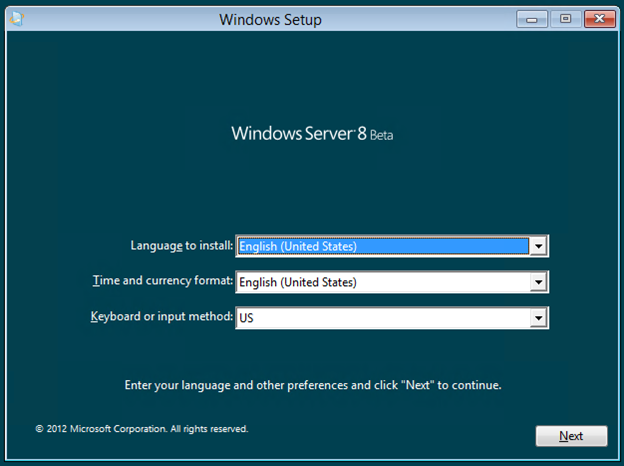
You can select Language / Time format and the keyboard method and proceed with the installation
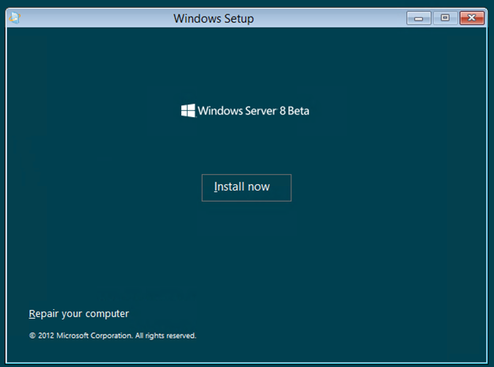
Next installation prompt, we can select available editions. At the moment, there’s only Datacenter Edition available in the beta which provide you with two options to select either GUI version of the Operating System or Core version. I have selected GUI version of the Operating System. we will look at later how we can switch back and forth from GUI to Core using Windows 8.
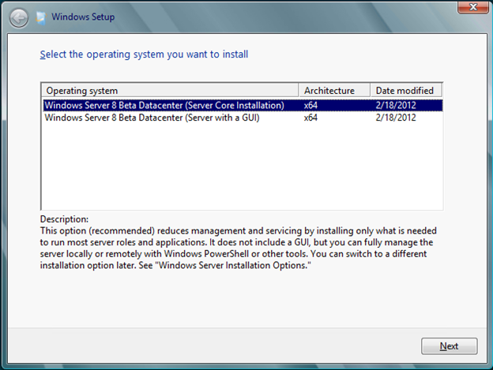
Next prompt we have Licensing terms which needs to be accepted to proceed further
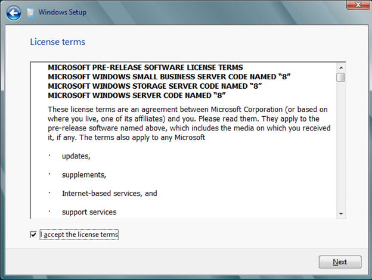
There are two types of installation options available which is Upgrade and Custom Installation. since I don’t have any operating system installed, I will select Custom Installation method
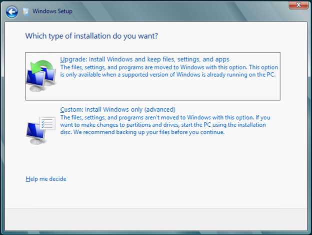
Next we need to select a partition for installation. once we are done selecting a partition then the setup process will begin installation
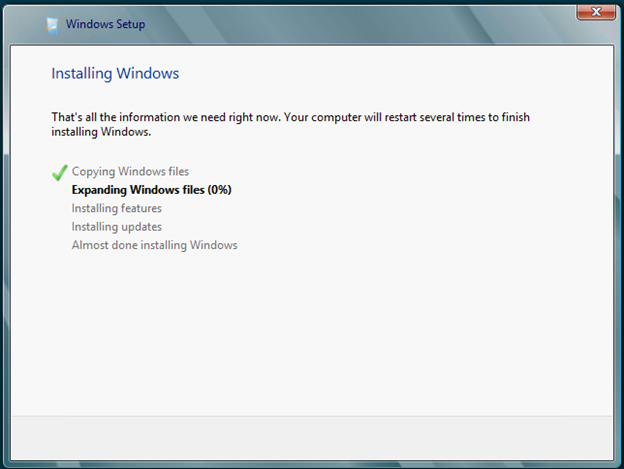
Once installation completes, we need to set administrator credentials before logging-in to the system.
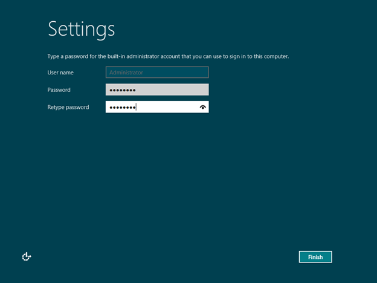
Once we have set Administrator credentials, we can now log-in to the system
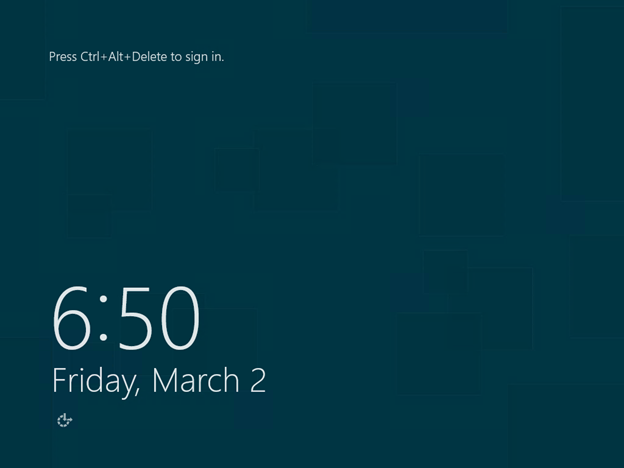
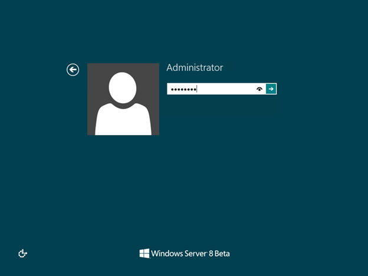
we can now see our very first preview on Windows Server 8 Beta Desktop Experience
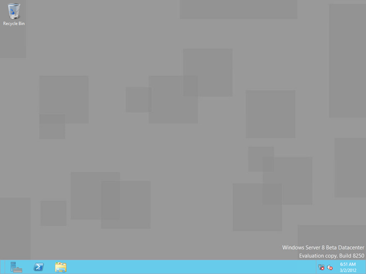
When you login using Administrator account, it will automatically run Server Manager which allows you to configure your server.
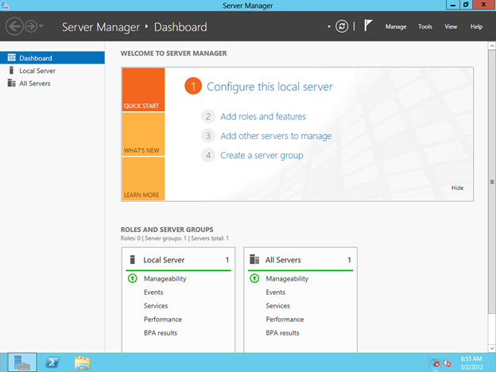
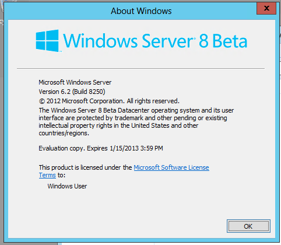
We will evaluate and look at more features on Windows Server 8 Beta on future posts